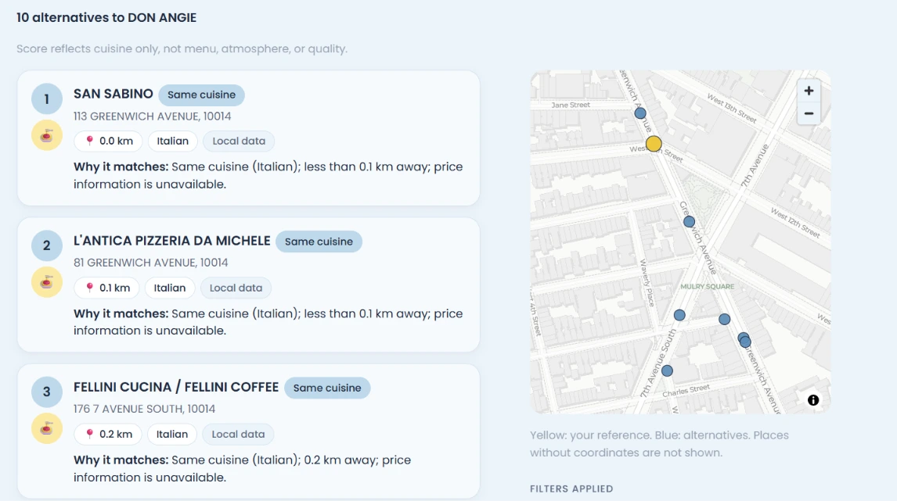

Project / 04
Restaurant alternatives
A team-built AI analytics tool that finds comparable restaurants using extracted review data.
- Role
- Team project

Overview
A team-built AI analytics tool that finds comparable restaurants using extracted review data.
Team project. The code is on GitHub.
Problem
The project explores restaurant discovery through comparable alternatives informed by review data.
Approach
The team built an AI analytics tool using extracted restaurant review data to find comparable restaurants.
Outcome
Source code is available in the linked GitHub repository. No performance metrics or validation results are claimed here.